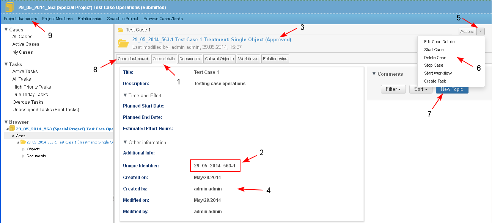

- The user starts creating a new case by clicking the button "Create Case" from:
- Project Dashboard/ Cases dashlet / Actions/ Create Case (1-2-3-4)
- Project Dashboard/ Project Details dashlet / Actions/ Create Case
- Project Dashboard/ Project Details dashlet / Actions/ Create Case
- Personal Dashboard/ My Cases dashlet/ Actions/Create Case (when there is no Project Management functionality and only Case Management functionality is installed).
- Project Dashboard/ Cases dashlet / Actions/ Create Case (1-2-3-4)

- The system opens a screen for selecting a case type from a drop down menu (1-2).

- The system opens the form for entering the metadata details of the selected case type. Depending on the selected type (2) the user must fill in all mandatory attributes of the case and must attach all supplementary documents which are mandatory:
- Title and Description - for this type of case are mandatory and the user should enter additional data in plain text (1-2).
- Time and Effort, Other Information - for this type of case are not mandatory
A case of type "Treatment: Single Object" may be created empty, i.e. without attached supplementary documents.
- The user clicks the button "Create Case" (3).
Clicking the button "Cancel" before the case was saved, does not create a new case with the defined attributes.

- The system opens the "Case details" page (1) of the newly created case.
- Unique Identifier (ID) is automatically generated for the case (2)
- State (status) - created automatically and set to "Approved"(3)
- Created on, Created by, Modified on, Modified by are automatically generated (4)
- Created by - is set automatically on the user name of the user, who creates the case.
- Created on - is set automatically on the current date and time of creation of the case. The format of date and time is set one-type for the entire system.
- There is a list of available Actions on the case (5-6) and Comments on the case may be entered (7)
- The user is able to open the case dashboard, manage documents, objects, workflows on relationships for the case, selecting the corresponding button (8)
- The user opens the project dashboard (9)

- When the case is created from the "Project dashboard" , it appears in the Cases dashlet (1) with the available actions on it (2-3) and is also visible in the Browser (4).